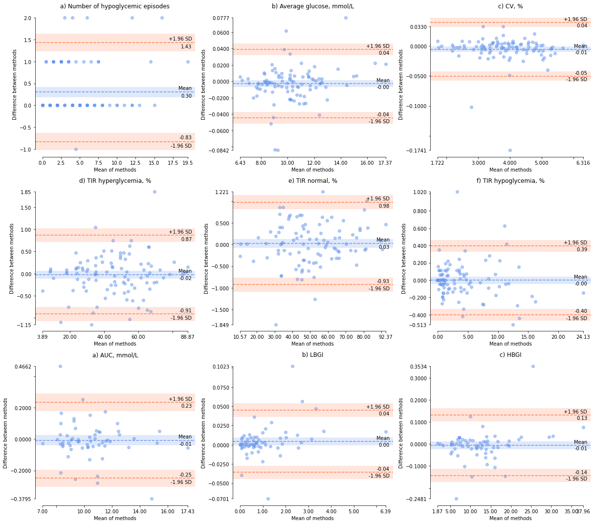

4. Other diabetes metrics¶
Calculating the other metrics of diabetes control and comparing them.
4.1. Import packages and upload data¶
import pandas as pd
import matplotlib.pyplot as plt
import copy
import sys
import pyCompare
sys.path.append("/Users/cr591/OneDrive - University of Exeter/Desktop/diametrics/diametrics")
import metrics as cgm
pd.set_option('display.max_rows', None)
pd.set_option('display.max_columns', None)
%matplotlib inline
df = pd.read_csv('~/OneDrive - University of Exeter/Desktop/PhD/Projects/interpolation-for-hypo-detection/dexcom-maths-exploration/data/tidy_data/interp_dataset.csv')
df.dropna(subset=['glc'], inplace=True)
# Combine baseline and 6-month periods for those who have both by selecting only the ID
df_2weeks = copy.copy(df)
#df_2weeks['ID'] = df['ID'].apply(lambda x: x[:4])
r_results = pd.read_csv('r_metrics.csv')
4.2. Diabetes metrics for each person for each interpolation method¶
# Interpolation methods
methods = ['glc', 'cut_glc', 'pchip', 'linear', 'cubicspline', 'akima',
'polynomial_3', 'polynomial_5', 'polynomial_7', 'matern', 'rq', 'rbf']
# Dictionary for results
results_dict = {}
# Loop through all of the columns and calculate all diabetes metrics
for method in methods:
sub_df = df_2weeks[['time', 'ID', method]]
sub_df.columns = ['time', 'ID', 'glc']
# cut_glc is 15 min intervals, the rest are 5
if method == 'cut_glc':
interval_size = 15
else:
interval_size = 5
# Add the results to the dictionary with method name as key
results_dict[method] = cgm.all_metrics(sub_df, 'time', 'glc', 'ID',
interval_size=interval_size)
# Diabetes metrics for 5-minute data for each person
results_dict['glc'].round(2).sort_values('ID')
| ID | TIR_lv2_hypo | TIR_lv1_hypo | TIR_hypo | TIR_norm | TIR_hyper | TIR_lv1_hyper | TIR_lv2_hyper | number_hypos | avg_length_of_hypo | total_time_in_hypos | number_lv1_hypos | number_lv2_hypos | sd | cv | minimum_glucose | maximum_glucose | average_glucose | mage+ | mage- | mage_mean | percent_missing | ea1c | |
|---|---|---|---|---|---|---|---|---|---|---|---|---|---|---|---|---|---|---|---|---|---|---|---|
| 86 | 1001_baseline | 1.24 | 2.48 | 3.71 | 65.99 | 30.30 | 19.01 | 11.29 | 7 | 0 days 00:27:51.428571428 | 0 days 03:15:00 | 4 | 3 | 3.47 | 39.30 | 2.22 | 19.37 | 8.83 | 8.31 | -8.20 | 8.25 | 2.76 | 7.18 |
| 36 | 1003_6months | 2.32 | 6.05 | 8.37 | 51.69 | 39.94 | 23.85 | 16.09 | 9 | 0 days 01:28:20 | 0 days 13:15:00 | 6 | 3 | 4.57 | 47.72 | 2.22 | 22.20 | 9.57 | 9.42 | -9.37 | 9.40 | 0.35 | 7.65 |
| 47 | 1003_baseline | 2.44 | 9.76 | 12.20 | 57.06 | 30.74 | 22.51 | 8.23 | 10 | 0 days 01:52:30 | 0 days 18:45:00 | 5 | 5 | 3.95 | 46.87 | 2.22 | 20.09 | 8.43 | 8.18 | -8.53 | 8.35 | 1.01 | 6.93 |
| 68 | 1004_6months | 1.13 | 0.59 | 1.72 | 48.76 | 49.52 | 38.09 | 11.42 | 3 | 0 days 00:48:20 | 0 days 02:25:00 | 0 | 3 | 3.03 | 29.93 | 2.22 | 20.14 | 10.13 | 7.77 | -7.10 | 7.44 | 3.28 | 8.00 |
| 58 | 1004_baseline | 1.42 | 2.84 | 4.26 | 33.26 | 62.48 | 16.82 | 45.66 | 6 | 0 days 00:55:00 | 0 days 05:30:00 | 4 | 2 | 5.66 | 43.72 | 2.22 | 22.20 | 12.95 | 13.43 | -13.29 | 13.36 | 4.18 | 9.78 |
| 62 | 1005_6months | 0.00 | 0.70 | 0.70 | 34.49 | 64.80 | 24.62 | 40.18 | 2 | 0 days 00:27:30 | 0 days 00:55:00 | 2 | 0 | 4.91 | 39.09 | 3.50 | 22.20 | 12.57 | 12.94 | -13.21 | 13.08 | 0.05 | 9.53 |
| 42 | 1006_baseline | 2.63 | 8.78 | 11.41 | 53.39 | 35.20 | 14.60 | 20.59 | 5 | 0 days 02:20:00 | 0 days 11:40:00 | 2 | 3 | 4.78 | 51.90 | 2.22 | 20.37 | 9.21 | 10.44 | -10.25 | 10.34 | 36.10 | 7.42 |
| 16 | 1007_baseline | 0.00 | 1.02 | 1.02 | 45.98 | 53.00 | 25.41 | 27.60 | 2 | 0 days 00:27:30 | 0 days 00:55:00 | 2 | 0 | 4.52 | 41.85 | 3.33 | 22.20 | 10.80 | 10.15 | -10.40 | 10.28 | 0.45 | 8.42 |
| 25 | 1008_6months | 7.67 | 5.39 | 13.06 | 51.64 | 35.30 | 22.66 | 12.64 | 5 | 0 days 02:25:00 | 0 days 12:05:00 | 2 | 3 | 4.60 | 51.80 | 2.22 | 22.20 | 8.87 | 10.49 | -10.67 | 10.58 | 0.17 | 7.21 |
| 38 | 1008_baseline | 7.04 | 8.53 | 15.56 | 58.35 | 26.09 | 19.47 | 6.63 | 17 | 0 days 01:24:42.352941176 | 1 days 00:00:00 | 11 | 6 | 4.09 | 52.55 | 2.22 | 22.20 | 7.79 | 9.09 | -8.87 | 8.98 | 2.05 | 6.53 |
| 1 | 1010_6months | 3.94 | 5.55 | 9.49 | 66.48 | 24.03 | 22.36 | 1.67 | 13 | 0 days 01:05:00 | 0 days 14:05:00 | 4 | 9 | 2.84 | 36.40 | 2.22 | 16.70 | 7.80 | 6.10 | -6.16 | 6.13 | 0.20 | 6.54 |
| 76 | 1010_baseline | 2.73 | 10.60 | 13.33 | 77.99 | 8.68 | 8.38 | 0.30 | 20 | 0 days 00:59:30 | 0 days 19:50:00 | 15 | 5 | 2.32 | 36.09 | 2.22 | 15.37 | 6.44 | 5.57 | -5.53 | 5.55 | 0.40 | 5.68 |
| 26 | 1011_6months | 0.00 | 0.35 | 0.35 | 45.47 | 54.18 | 38.33 | 15.85 | 0 | NaT | 0 | 0 | 0 | 3.37 | 31.55 | 3.66 | 19.59 | 10.69 | 8.05 | -8.70 | 8.38 | 0.00 | 8.35 |
| 53 | 1011_baseline | 0.00 | 0.28 | 0.28 | 33.41 | 66.31 | 39.78 | 26.52 | 1 | 0 days 00:20:00 | 0 days 00:20:00 | 1 | 0 | 3.47 | 29.90 | 3.39 | 22.20 | 11.60 | 8.62 | -8.70 | 8.66 | 1.57 | 8.92 |
| 22 | 1012_6months | 0.00 | 0.00 | 0.00 | 14.36 | 85.64 | 21.67 | 63.96 | 0 | NaT | 0 | 0 | 0 | 4.07 | 27.22 | 6.22 | 22.20 | 14.95 | 9.00 | -9.71 | 9.36 | 0.04 | 11.03 |
| 89 | 1012_baseline | 0.00 | 0.00 | 0.00 | 33.28 | 66.72 | 36.43 | 30.29 | 0 | NaT | 0 | 0 | 0 | 3.69 | 30.87 | 4.61 | 22.20 | 11.95 | 8.43 | -8.50 | 8.47 | 0.86 | 9.14 |
| 82 | 1013_6months | 4.55 | 6.67 | 11.22 | 58.95 | 29.83 | 21.20 | 8.63 | 13 | 0 days 01:18:50.769230769 | 0 days 17:05:00 | 8 | 5 | 3.99 | 48.21 | 2.22 | 22.20 | 8.27 | 8.47 | -9.00 | 8.73 | 2.21 | 6.83 |
| 6 | 1014_6months | 1.99 | 1.64 | 3.63 | 41.56 | 54.81 | 32.36 | 22.44 | 4 | 0 days 01:20:00 | 0 days 05:20:00 | 1 | 3 | 4.40 | 40.20 | 2.22 | 22.20 | 10.95 | 11.53 | -11.15 | 11.34 | 1.05 | 8.51 |
| 55 | 1014_baseline | 3.45 | 10.04 | 13.49 | 45.01 | 41.51 | 29.33 | 12.18 | 12 | 0 days 01:45:50 | 0 days 21:10:00 | 7 | 5 | 4.19 | 45.89 | 2.22 | 21.86 | 9.12 | 10.62 | -10.98 | 10.80 | 3.87 | 7.37 |
| 48 | 1015_baseline | 1.57 | 0.15 | 1.72 | 42.32 | 55.97 | 25.83 | 30.13 | 1 | 0 days 02:45:00 | 0 days 02:45:00 | 0 | 1 | 4.82 | 41.82 | 2.22 | 22.20 | 11.52 | 11.93 | -11.71 | 11.82 | 0.40 | 8.88 |
| 84 | 1019_6months | 0.00 | 0.00 | 0.00 | 56.07 | 43.93 | 33.10 | 10.83 | 0 | NaT | 0 | 0 | 0 | 3.16 | 31.01 | 4.66 | 20.92 | 10.19 | 7.67 | -8.32 | 8.00 | 47.63 | 8.04 |
| 67 | 1021_6months | 0.06 | 0.61 | 0.67 | 33.07 | 66.26 | 34.05 | 32.21 | 2 | 0 days 00:20:00 | 0 days 00:40:00 | 2 | 0 | 3.93 | 32.69 | 2.89 | 22.20 | 12.01 | 9.52 | -9.90 | 9.71 | 2.15 | 9.18 |
| 46 | 1021_baseline | 0.00 | 0.40 | 0.40 | 25.11 | 74.49 | 45.98 | 28.51 | 1 | 0 days 00:30:00 | 0 days 00:30:00 | 1 | 0 | 3.43 | 28.29 | 3.61 | 22.20 | 12.12 | 7.68 | -7.40 | 7.54 | 11.36 | 9.25 |
| 77 | 1022_baseline | 0.90 | 2.46 | 3.37 | 68.73 | 27.90 | 21.72 | 6.18 | 5 | 0 days 01:03:00 | 0 days 05:15:00 | 3 | 2 | 3.12 | 35.57 | 2.22 | 21.48 | 8.78 | 8.49 | -7.91 | 8.20 | -0.01 | 7.15 |
| 91 | 1024_6months | 0.00 | 0.00 | 0.00 | 72.71 | 27.29 | 23.13 | 4.15 | 0 | NaT | 0 | 0 | 0 | 2.73 | 30.30 | 4.22 | 22.09 | 9.01 | 5.97 | -6.00 | 5.98 | 3.65 | 7.30 |
| 27 | 1025_6months | 0.00 | 0.00 | 0.00 | 55.43 | 44.57 | 31.34 | 13.23 | 0 | NaT | 0 | 0 | 0 | 2.93 | 28.58 | 4.50 | 19.42 | 10.25 | 6.58 | -6.98 | 6.78 | 3.72 | 8.08 |
| 43 | 1025_baseline | 0.00 | 0.42 | 0.42 | 80.71 | 18.87 | 14.84 | 4.03 | 1 | 0 days 00:25:00 | 0 days 00:25:00 | 1 | 0 | 2.41 | 28.58 | 3.11 | 18.59 | 8.45 | 6.57 | -6.29 | 6.43 | 1.72 | 6.94 |
| 2 | 1026_6months | 0.22 | 0.90 | 1.12 | 42.66 | 56.22 | 36.27 | 19.96 | 1 | 0 days 01:40:00 | 0 days 01:40:00 | 0 | 1 | 4.06 | 36.23 | 2.94 | 22.20 | 11.21 | 8.56 | -10.12 | 9.34 | 9.40 | 8.68 |
| 5 | 1027_6months | 0.00 | 0.56 | 0.56 | 31.99 | 67.45 | 35.21 | 32.24 | 2 | 0 days 00:25:00 | 0 days 00:50:00 | 2 | 0 | 3.84 | 31.63 | 3.27 | 22.20 | 12.14 | 8.56 | -8.59 | 8.57 | 0.76 | 9.26 |
| 72 | 1027_baseline | 0.00 | 0.83 | 0.83 | 54.15 | 45.03 | 28.45 | 16.58 | 1 | 0 days 01:00:00 | 0 days 01:00:00 | 1 | 0 | 3.60 | 35.93 | 3.22 | 22.09 | 10.01 | 7.25 | -7.56 | 7.41 | 3.02 | 7.92 |
| 85 | 1029_6months | 0.98 | 2.22 | 3.20 | 45.25 | 51.55 | 35.60 | 15.94 | 4 | 0 days 01:07:30 | 0 days 04:30:00 | 3 | 1 | 3.86 | 37.46 | 2.22 | 22.20 | 10.31 | 9.47 | -9.25 | 9.36 | 2.51 | 8.11 |
| 54 | 1029_baseline | 0.00 | 0.28 | 0.28 | 33.41 | 66.31 | 39.78 | 26.52 | 1 | 0 days 00:20:00 | 0 days 00:20:00 | 1 | 0 | 3.47 | 29.90 | 3.39 | 22.20 | 11.60 | 8.62 | -8.70 | 8.66 | 1.57 | 8.92 |
| 97 | 1030_baseline | 0.22 | 0.39 | 0.62 | 10.43 | 88.95 | 10.21 | 78.74 | 2 | 0 days 00:22:30 | 0 days 00:45:00 | 1 | 1 | 4.99 | 28.70 | 2.22 | 22.20 | 17.38 | 9.89 | -10.20 | 10.04 | 9.72 | 12.56 |
| 37 | 1031_6months | 0.27 | 0.54 | 0.81 | 75.64 | 23.55 | 16.71 | 6.83 | 1 | 0 days 00:35:00 | 0 days 00:35:00 | 0 | 1 | 3.10 | 35.98 | 2.39 | 19.42 | 8.61 | 6.62 | -6.48 | 6.55 | 0.20 | 7.04 |
| 96 | 1031_baseline | 0.00 | 0.55 | 0.55 | 75.98 | 23.47 | 21.28 | 2.20 | 0 | NaT | 0 | 0 | 0 | 2.57 | 31.23 | 3.66 | 16.32 | 8.23 | 5.80 | -5.80 | 5.80 | 0.48 | 6.80 |
| 20 | 1032_6months | 0.23 | 0.63 | 0.87 | 20.88 | 78.26 | 23.70 | 54.56 | 2 | 0 days 00:32:30 | 0 days 01:05:00 | 1 | 1 | 5.02 | 34.74 | 2.66 | 22.20 | 14.44 | 13.07 | -12.52 | 12.80 | 12.20 | 10.71 |
| 40 | 1032_baseline | 0.61 | 0.98 | 1.60 | 10.99 | 87.42 | 13.87 | 73.54 | 4 | 0 days 00:28:45 | 0 days 01:55:00 | 2 | 2 | 5.07 | 30.58 | 2.22 | 22.20 | 16.57 | 11.07 | -11.15 | 11.11 | 16.11 | 12.05 |
| 17 | 1034_6months | 1.35 | 5.96 | 7.31 | 82.51 | 10.18 | 10.18 | 0.00 | 8 | 0 days 01:15:37.500000 | 0 days 10:05:00 | 6 | 2 | 2.18 | 30.76 | 2.22 | 13.37 | 7.10 | 5.20 | -5.01 | 5.11 | 0.04 | 6.09 |
| 56 | 1034_baseline | 0.51 | 3.19 | 3.70 | 92.60 | 3.70 | 3.70 | 0.00 | 6 | 0 days 00:47:30 | 0 days 04:45:00 | 4 | 2 | 1.75 | 26.54 | 2.44 | 12.21 | 6.58 | 4.48 | -4.57 | 4.53 | 0.74 | 5.77 |
| 33 | 1035_6months | 0.15 | 1.39 | 1.54 | 46.53 | 51.93 | 32.08 | 19.85 | 3 | 0 days 00:51:40 | 0 days 02:35:00 | 3 | 0 | 3.80 | 36.13 | 2.83 | 22.20 | 10.51 | 9.39 | -9.51 | 9.45 | 2.02 | 8.24 |
| 50 | 1035_baseline | 0.20 | 3.60 | 3.80 | 42.17 | 54.03 | 32.18 | 21.84 | 5 | 0 days 01:10:00 | 0 days 05:50:00 | 4 | 1 | 3.76 | 36.25 | 2.94 | 20.59 | 10.38 | 10.39 | -10.68 | 10.54 | 1.14 | 8.15 |
| 69 | 1038_baseline | 0.00 | 0.00 | 0.00 | 29.73 | 70.27 | 19.82 | 50.45 | 0 | NaT | 0 | 0 | 0 | 5.03 | 34.93 | 7.27 | 22.20 | 14.41 | 11.10 | -12.96 | 12.03 | 16.54 | 10.69 |
| 29 | 1040_6months | 2.72 | 6.86 | 9.59 | 44.80 | 45.61 | 27.40 | 18.21 | 15 | 0 days 00:57:40 | 0 days 14:25:00 | 8 | 7 | 4.36 | 45.64 | 2.22 | 22.20 | 9.56 | 11.86 | -12.07 | 11.96 | 0.30 | 7.64 |
| 44 | 1045_6months | 0.64 | 1.18 | 1.82 | 25.58 | 72.61 | 20.92 | 51.69 | 3 | 0 days 00:51:40 | 0 days 02:35:00 | 1 | 2 | 5.35 | 38.80 | 2.22 | 22.20 | 13.78 | 11.78 | -12.16 | 11.97 | 3.00 | 10.29 |
| 90 | 1045_baseline | 0.06 | 1.32 | 1.38 | 31.94 | 66.69 | 25.06 | 41.63 | 2 | 0 days 00:50:00 | 0 days 01:40:00 | 2 | 0 | 4.85 | 37.71 | 2.83 | 22.20 | 12.85 | 13.42 | -12.64 | 13.03 | 13.66 | 9.71 |
| 8 | 1046_6months | 2.55 | 2.15 | 4.69 | 45.74 | 49.56 | 39.97 | 9.59 | 3 | 0 days 03:45:00 | 0 days 11:15:00 | 2 | 1 | 3.29 | 33.66 | 2.22 | 18.20 | 9.77 | 7.78 | -8.60 | 8.19 | 23.89 | 7.77 |
| 75 | 1046_baseline | 2.76 | 1.35 | 4.11 | 38.43 | 57.46 | 35.28 | 22.17 | 4 | 0 days 01:23:45 | 0 days 05:35:00 | 1 | 3 | 3.97 | 36.46 | 2.22 | 22.20 | 10.88 | 7.66 | -7.83 | 7.75 | 20.45 | 8.47 |
| 63 | 1047_6months | 0.27 | 0.98 | 1.25 | 17.88 | 80.88 | 18.15 | 62.73 | 2 | 0 days 00:47:30 | 0 days 01:35:00 | 1 | 1 | 5.29 | 34.82 | 2.44 | 22.20 | 15.18 | 13.55 | -12.70 | 13.13 | 7.24 | 11.18 |
| 3 | 1048_6months | 1.97 | 3.54 | 5.51 | 42.60 | 51.89 | 32.39 | 19.50 | 6 | 0 days 01:26:40 | 0 days 08:40:00 | 4 | 2 | 4.12 | 39.46 | 2.39 | 21.86 | 10.43 | 9.05 | -9.69 | 9.37 | 0.50 | 8.19 |
| 61 | 1049_6months | 16.02 | 8.04 | 24.06 | 40.71 | 35.23 | 19.11 | 16.13 | 10 | 0 days 03:38:00 | 1 days 12:20:00 | 4 | 6 | 5.04 | 59.94 | 2.22 | 22.20 | 8.41 | 11.29 | -10.89 | 11.09 | 0.37 | 6.92 |
| 19 | 1051_6months | 1.50 | 2.14 | 3.65 | 46.31 | 50.05 | 35.64 | 14.40 | 5 | 0 days 01:10:00 | 0 days 05:50:00 | 1 | 4 | 3.74 | 36.74 | 2.33 | 21.37 | 10.17 | 8.23 | -8.20 | 8.21 | 2.79 | 8.03 |
| 7 | 1051_baseline | 2.48 | 2.93 | 5.41 | 55.56 | 39.03 | 29.88 | 9.15 | 7 | 0 days 01:06:25.714285714 | 0 days 07:45:00 | 3 | 4 | 3.57 | 38.27 | 2.22 | 22.20 | 9.33 | 8.80 | -9.08 | 8.94 | 0.49 | 7.50 |
| 66 | 2001_baseline | 5.75 | 2.98 | 8.73 | 63.42 | 27.85 | 20.13 | 7.72 | 8 | 0 days 01:40:00 | 0 days 13:20:00 | 4 | 4 | 3.36 | 40.50 | 2.22 | 17.76 | 8.30 | 7.70 | -7.21 | 7.46 | 0.35 | 6.85 |
| 92 | 2003_6months | 0.05 | 0.64 | 0.69 | 81.15 | 18.16 | 16.94 | 1.22 | 2 | 0 days 00:20:00 | 0 days 00:40:00 | 2 | 0 | 2.18 | 27.36 | 2.94 | 15.70 | 7.95 | 5.33 | -5.30 | 5.31 | 4.79 | 6.63 |
| 52 | 2003_baseline | 0.00 | 0.16 | 0.16 | 65.37 | 34.47 | 32.71 | 1.76 | 0 | NaT | 0 | 0 | 0 | 2.49 | 27.86 | 3.78 | 16.00 | 8.94 | 5.82 | -6.28 | 6.05 | 5.68 | 7.25 |
| 74 | 2004_6months | 0.92 | 2.76 | 3.69 | 52.07 | 44.24 | 22.58 | 21.66 | 1 | 0 days 00:35:00 | 0 days 00:35:00 | 1 | 0 | 4.42 | 44.53 | 2.66 | 18.76 | 9.92 | 11.96 | -12.93 | 12.44 | 6.87 | 7.87 |
| 30 | 2004_baseline | 6.86 | 9.20 | 16.06 | 62.30 | 21.64 | 16.62 | 5.02 | 15 | 0 days 01:31:20 | 0 days 22:50:00 | 9 | 6 | 3.35 | 45.16 | 2.22 | 16.48 | 7.41 | 8.18 | -8.05 | 8.11 | 8.18 | 6.29 |
| 35 | 2005_6months | 0.06 | 0.00 | 0.06 | 48.99 | 50.95 | 30.26 | 20.69 | 0 | NaT | 0 | 0 | 0 | 3.57 | 32.28 | 2.22 | 21.59 | 11.05 | 8.52 | -8.88 | 8.70 | 8.12 | 8.58 |
| 32 | 2008_baseline | 3.33 | 4.16 | 7.48 | 38.88 | 53.64 | 23.02 | 30.61 | 6 | 0 days 01:50:00 | 0 days 11:00:00 | 2 | 4 | 5.30 | 47.94 | 2.22 | 22.20 | 11.06 | 13.55 | -14.14 | 13.84 | 1.54 | 8.58 |
| 11 | 2009_baseline | 0.69 | 2.03 | 2.72 | 44.35 | 52.93 | 35.77 | 17.16 | 6 | 0 days 00:34:10 | 0 days 03:25:00 | 4 | 2 | 3.81 | 37.19 | 2.28 | 22.22 | 10.24 | 9.61 | -9.03 | 9.32 | 5.49 | 8.07 |
| 34 | 2011_6months | 0.00 | 0.00 | 0.00 | 59.69 | 40.31 | 40.31 | 0.00 | 0 | NaT | 0 | 0 | 0 | 1.84 | 19.24 | 4.61 | 13.82 | 9.57 | 4.23 | -4.38 | 4.31 | 1.14 | 7.65 |
| 70 | 2012_6months | 0.20 | 1.27 | 1.47 | 80.46 | 18.07 | 13.50 | 4.57 | 2 | 0 days 01:00:00 | 0 days 02:00:00 | 1 | 1 | 2.54 | 30.67 | 2.44 | 18.17 | 8.29 | 7.23 | -6.93 | 7.08 | 0.80 | 6.84 |
| 59 | 2012_baseline | 0.10 | 0.81 | 0.92 | 75.28 | 23.80 | 17.19 | 6.61 | 3 | 0 days 00:21:40 | 0 days 01:05:00 | 3 | 0 | 2.99 | 34.73 | 2.89 | 19.17 | 8.62 | 9.23 | -9.17 | 9.20 | 0.85 | 7.05 |
| 60 | 2013_baseline | 0.15 | 1.56 | 1.71 | 73.94 | 24.34 | 18.25 | 6.10 | 5 | 0 days 00:22:00 | 0 days 01:50:00 | 5 | 0 | 3.08 | 38.20 | 2.77 | 16.87 | 8.08 | 8.49 | -7.75 | 8.12 | 0.24 | 6.71 |
| 39 | 2016_baseline | 1.50 | 3.25 | 4.76 | 33.92 | 61.33 | 28.41 | 32.92 | 3 | 0 days 02:10:00 | 0 days 06:30:00 | 2 | 1 | 4.71 | 40.33 | 2.22 | 22.20 | 11.68 | 11.32 | -12.63 | 11.97 | 9.55 | 8.97 |
| 21 | 2017_6months | 0.00 | 0.30 | 0.30 | 30.66 | 69.03 | 33.38 | 35.65 | 1 | 0 days 00:20:00 | 0 days 00:20:00 | 1 | 0 | 4.23 | 34.26 | 3.11 | 22.22 | 12.35 | 10.11 | -9.77 | 9.94 | 0.00 | 9.40 |
| 13 | 2017_baseline | 0.16 | 1.13 | 1.29 | 49.19 | 49.52 | 40.39 | 9.13 | 3 | 0 days 00:35:00 | 0 days 01:45:00 | 3 | 0 | 3.21 | 32.24 | 2.94 | 20.20 | 9.96 | 7.11 | -7.26 | 7.19 | 5.18 | 7.90 |
| 4 | 2019_6months | 0.00 | 0.26 | 0.26 | 35.07 | 64.68 | 42.64 | 22.04 | 0 | NaT | 0 | 0 | 0 | 3.16 | 28.13 | 3.44 | 22.17 | 11.25 | 8.31 | -8.12 | 8.21 | 1.32 | 8.70 |
| 94 | 2020_baseline | 6.52 | 5.20 | 11.72 | 32.50 | 55.78 | 15.13 | 40.65 | 12 | 0 days 01:30:25 | 0 days 18:05:00 | 3 | 9 | 6.32 | 53.40 | 2.22 | 22.20 | 11.83 | 17.38 | -15.07 | 16.23 | 0.30 | 9.07 |
| 87 | 2023_6months | 0.00 | 0.69 | 0.69 | 54.60 | 44.71 | 26.61 | 18.10 | 1 | 0 days 00:25:00 | 0 days 00:25:00 | 1 | 0 | 3.99 | 38.09 | 3.33 | 21.39 | 10.47 | 10.11 | -9.51 | 9.81 | 18.59 | 8.21 |
| 14 | 2023_baseline | 0.00 | 3.56 | 3.56 | 82.32 | 14.12 | 13.08 | 1.04 | 2 | 0 days 02:00:00 | 0 days 04:00:00 | 2 | 0 | 2.38 | 30.95 | 3.00 | 18.65 | 7.68 | 5.82 | -5.92 | 5.87 | 1.34 | 6.46 |
| 9 | 2024_6months | 0.67 | 3.26 | 3.93 | 78.09 | 17.98 | 15.11 | 2.87 | 5 | 0 days 00:57:00 | 0 days 04:45:00 | 4 | 1 | 2.72 | 35.02 | 2.22 | 15.76 | 7.76 | 6.06 | -6.36 | 6.21 | 3.04 | 6.51 |
| 83 | 2024_baseline | 0.65 | 2.08 | 2.73 | 61.89 | 35.37 | 30.02 | 5.35 | 4 | 0 days 00:47:30 | 0 days 03:10:00 | 2 | 2 | 3.09 | 34.15 | 2.22 | 18.81 | 9.05 | 7.86 | -7.83 | 7.84 | 14.96 | 7.32 |
| 64 | 2026_baseline | 0.45 | 2.20 | 2.65 | 45.89 | 51.46 | 21.06 | 30.41 | 4 | 0 days 00:47:30 | 0 days 03:10:00 | 2 | 2 | 5.17 | 45.57 | 2.61 | 22.20 | 11.34 | 12.81 | -13.28 | 13.05 | 19.23 | 8.76 |
| 31 | 2027_6months | 3.88 | 6.53 | 10.41 | 43.50 | 46.09 | 21.03 | 25.06 | 5 | 0 days 03:09:00 | 0 days 15:45:00 | 2 | 3 | 5.27 | 51.66 | 2.22 | 22.20 | 10.21 | 11.69 | -10.88 | 11.28 | 1.63 | 8.05 |
| 93 | 2027_baseline | 0.35 | 0.46 | 0.81 | 33.33 | 65.86 | 31.60 | 34.26 | 1 | 0 days 00:30:00 | 0 days 00:30:00 | 1 | 0 | 4.98 | 39.57 | 2.77 | 22.20 | 12.57 | 11.60 | -11.06 | 11.33 | 8.45 | 9.54 |
| 0 | 2028_baseline | 2.24 | 2.88 | 5.12 | 59.68 | 35.20 | 24.59 | 10.61 | 4 | 0 days 01:53:45 | 0 days 07:35:00 | 1 | 3 | 3.80 | 42.21 | 2.22 | 21.86 | 9.00 | 9.22 | -8.96 | 9.09 | 5.11 | 7.29 |
| 24 | 2029_6months | 0.00 | 0.80 | 0.80 | 57.73 | 41.47 | 28.70 | 12.77 | 2 | 0 days 00:30:00 | 0 days 01:00:00 | 2 | 0 | 3.62 | 35.72 | 3.50 | 22.20 | 10.15 | 8.42 | -8.71 | 8.57 | 5.67 | 8.01 |
| 23 | 2029_baseline | 0.55 | 4.22 | 4.77 | 70.18 | 25.05 | 19.24 | 5.81 | 7 | 0 days 00:55:00 | 0 days 06:25:00 | 6 | 1 | 3.18 | 38.45 | 2.33 | 19.26 | 8.26 | 8.10 | -8.06 | 8.08 | 1.67 | 6.82 |
| 51 | 2030_6months | 0.78 | 1.32 | 2.10 | 38.18 | 59.71 | 24.95 | 34.76 | 4 | 0 days 00:38:45 | 0 days 02:35:00 | 2 | 2 | 4.76 | 38.56 | 2.22 | 22.20 | 12.35 | 11.68 | -11.01 | 11.35 | 15.84 | 9.40 |
| 28 | 2031_6months | 0.00 | 0.00 | 0.00 | 38.58 | 61.42 | 32.60 | 28.82 | 0 | NaT | 0 | 0 | 0 | 4.33 | 37.24 | 4.00 | 22.20 | 11.63 | 10.47 | -10.48 | 10.47 | 7.92 | 8.95 |
| 73 | 2031_baseline | 0.83 | 3.82 | 4.65 | 48.84 | 46.52 | 21.22 | 25.30 | 7 | 0 days 00:55:42.857142857 | 0 days 06:30:00 | 6 | 1 | 4.59 | 45.11 | 2.22 | 21.81 | 10.17 | 11.02 | -10.82 | 10.92 | 1.12 | 8.03 |
| 65 | 2032_6months | 0.30 | 0.76 | 1.06 | 63.89 | 35.05 | 15.58 | 19.47 | 3 | 0 days 00:30:00 | 0 days 01:30:00 | 2 | 1 | 4.52 | 45.69 | 2.22 | 22.20 | 9.90 | 8.85 | -9.26 | 9.06 | 0.05 | 7.86 |
| 78 | 2032_baseline | 0.43 | 3.32 | 3.75 | 66.01 | 30.24 | 12.42 | 17.82 | 4 | 0 days 00:57:30 | 0 days 03:50:00 | 3 | 1 | 4.82 | 51.91 | 2.22 | 22.20 | 9.29 | 9.88 | -9.64 | 9.76 | 2.68 | 7.47 |
| 80 | 2035_6months | 0.00 | 0.00 | 0.00 | 44.83 | 55.17 | 27.59 | 27.59 | 0 | NaT | 0 | 0 | 0 | 3.91 | 35.07 | 6.71 | 18.65 | 11.14 | 11.21 | -7.33 | 9.27 | 49.12 | 8.63 |
| 81 | 2035_baseline | 2.01 | 2.06 | 4.07 | 43.41 | 52.52 | 29.33 | 23.19 | 4 | 0 days 01:36:00 | 0 days 06:24:00 | 3 | 1 | 3.80 | 35.47 | 2.22 | 21.64 | 10.71 | 9.45 | -9.10 | 9.27 | -0.01 | 8.37 |
| 57 | 2036_6months | 0.00 | 0.64 | 0.64 | 90.61 | 8.75 | 8.75 | 0.00 | 1 | 0 days 00:25:00 | 0 days 00:25:00 | 1 | 0 | 1.73 | 22.64 | 3.72 | 12.82 | 7.62 | 4.33 | -4.39 | 4.36 | 4.80 | 6.42 |
| 98 | 2036_baseline | 0.00 | 2.42 | 2.42 | 89.25 | 8.33 | 6.51 | 1.82 | 7 | 0 days 00:29:17.142857142 | 0 days 03:25:00 | 7 | 0 | 2.21 | 31.33 | 3.27 | 18.20 | 7.04 | 4.99 | -5.03 | 5.01 | 0.45 | 6.06 |
| 49 | 2038_6months | 2.58 | 4.43 | 7.01 | 47.42 | 45.57 | 18.30 | 27.27 | 11 | 0 days 00:51:21.818181818 | 0 days 09:25:00 | 5 | 6 | 5.42 | 52.37 | 2.22 | 22.20 | 10.35 | 12.68 | -12.97 | 12.82 | 2.22 | 8.14 |
| 88 | 2039_baseline | 0.63 | 3.77 | 4.40 | 49.74 | 45.86 | 33.75 | 12.11 | 5 | 0 days 01:19:00 | 0 days 06:35:00 | 4 | 1 | 3.59 | 37.49 | 2.55 | 19.70 | 9.57 | 10.25 | -10.43 | 10.34 | 2.99 | 7.65 |
| 15 | 2040_6months | 0.00 | 0.34 | 0.34 | 34.56 | 65.10 | 29.28 | 35.81 | 1 | 0 days 00:25:00 | 0 days 00:25:00 | 1 | 0 | 4.22 | 33.91 | 3.27 | 22.20 | 12.44 | 9.77 | -9.95 | 9.86 | 3.61 | 9.45 |
| 79 | 2040_baseline | 1.73 | 6.65 | 8.38 | 53.03 | 38.59 | 28.38 | 10.21 | 8 | 0 days 01:45:37.500000 | 0 days 14:05:00 | 5 | 3 | 3.96 | 43.84 | 2.22 | 22.20 | 9.03 | 8.94 | -9.05 | 8.99 | 4.64 | 7.31 |
| 12 | 2041_6months | 0.00 | 1.00 | 1.00 | 64.19 | 34.81 | 25.54 | 9.27 | 2 | 0 days 00:30:00 | 0 days 01:00:00 | 2 | 0 | 3.15 | 33.64 | 3.33 | 20.64 | 9.35 | 7.61 | -7.78 | 7.69 | 4.43 | 7.51 |
| 95 | 2041_baseline | 0.00 | 4.30 | 4.30 | 66.58 | 29.11 | 20.71 | 8.41 | 5 | 0 days 01:21:00 | 0 days 06:45:00 | 5 | 0 | 3.38 | 38.12 | 3.05 | 20.42 | 8.86 | 8.55 | -8.88 | 8.72 | 0.59 | 7.20 |
| 10 | 2042_6months | 0.71 | 1.16 | 1.87 | 27.83 | 70.30 | 34.85 | 35.45 | 4 | 0 days 00:41:15 | 0 days 02:45:00 | 2 | 2 | 4.73 | 37.86 | 2.22 | 22.20 | 12.50 | 10.26 | -10.23 | 10.24 | 0.29 | 9.49 |
| 71 | 2043_6months | 7.78 | 3.81 | 11.58 | 55.32 | 33.09 | 19.64 | 13.46 | 8 | 0 days 02:05:37.500000 | 0 days 16:45:00 | 5 | 3 | 4.20 | 47.26 | 2.22 | 21.53 | 8.89 | 9.31 | -9.66 | 9.49 | 8.71 | 7.22 |
| 41 | 2043_baseline | 2.09 | 8.03 | 10.12 | 57.76 | 32.12 | 18.96 | 13.16 | 8 | 0 days 01:35:00 | 0 days 12:40:00 | 5 | 3 | 4.48 | 51.37 | 2.22 | 22.20 | 8.71 | 11.44 | -11.80 | 11.62 | 25.38 | 7.11 |
| 45 | 2045_6months | 0.67 | 7.37 | 8.04 | 64.47 | 27.49 | 17.35 | 10.14 | 6 | 0 days 01:55:00 | 0 days 11:30:00 | 5 | 1 | 3.72 | 44.11 | 2.66 | 21.75 | 8.43 | 8.08 | -8.41 | 8.24 | 0.33 | 6.93 |
| 18 | 2045_baseline | 0.15 | 1.41 | 1.56 | 35.37 | 63.07 | 36.32 | 26.75 | 2 | 0 days 01:12:30 | 0 days 02:25:00 | 2 | 0 | 3.96 | 33.90 | 2.33 | 22.20 | 11.69 | 9.80 | -9.53 | 9.66 | 0.14 | 8.98 |
# Statistical overview of diabetes metrics for 5-minute data
results_dict['glc'].describe().round(2)
| TIR_lv2_hypo | TIR_lv1_hypo | TIR_hypo | TIR_norm | TIR_hyper | TIR_lv1_hyper | TIR_lv2_hyper | number_hypos | avg_length_of_hypo | number_lv1_hypos | number_lv2_hypos | sd | cv | minimum_glucose | maximum_glucose | average_glucose | mage+ | mage- | mage_mean | percent_missing | ea1c | |
|---|---|---|---|---|---|---|---|---|---|---|---|---|---|---|---|---|---|---|---|---|---|
| count | 99.00 | 99.00 | 99.00 | 99.00 | 99.00 | 99.00 | 99.00 | 99.00 | 85 | 99.00 | 99.00 | 99.00 | 99.00 | 99.00 | 99.00 | 99.00 | 99.00 | 99.00 | 99.00 | 99.00 | 99.00 |
| mean | 1.38 | 2.59 | 3.97 | 50.81 | 45.22 | 25.15 | 20.07 | 4.32 | 0 days 01:07:03.230390716 | 2.67 | 1.66 | 3.84 | 37.66 | 2.84 | 20.59 | 10.26 | 9.17 | -9.18 | 9.18 | 5.61 | 8.08 |
| std | 2.35 | 2.71 | 4.56 | 18.10 | 19.26 | 9.00 | 16.41 | 4.12 | 0 days 00:44:05.411034983 | 2.59 | 2.08 | 0.95 | 7.58 | 0.95 | 2.45 | 2.08 | 2.37 | 2.32 | 2.32 | 8.94 | 1.31 |
| min | 0.00 | 0.00 | 0.00 | 10.43 | 3.70 | 3.70 | 0.00 | 0.00 | 0 days 00:20:00 | 0.00 | 0.00 | 1.73 | 19.24 | 2.22 | 12.21 | 6.44 | 4.23 | -15.07 | 4.31 | -0.01 | 5.68 |
| 25% | 0.00 | 0.58 | 0.69 | 38.31 | 30.27 | 18.99 | 8.32 | 1.00 | 0 days 00:30:00 | 1.00 | 0.00 | 3.17 | 31.94 | 2.22 | 19.42 | 8.80 | 7.78 | -10.68 | 7.92 | 0.49 | 7.17 |
| 50% | 0.45 | 1.41 | 2.10 | 48.84 | 45.61 | 24.59 | 16.58 | 3.00 | 0 days 00:57:00 | 2.00 | 1.00 | 3.84 | 36.40 | 2.39 | 22.17 | 10.15 | 9.00 | -9.05 | 9.09 | 2.21 | 8.01 |
| 75% | 1.98 | 3.69 | 4.94 | 63.66 | 58.58 | 32.38 | 28.06 | 6.00 | 0 days 01:28:20 | 4.00 | 3.00 | 4.55 | 42.03 | 3.24 | 22.20 | 11.56 | 10.56 | -7.80 | 10.56 | 6.27 | 8.90 |
| max | 16.02 | 10.60 | 24.06 | 92.60 | 88.95 | 45.98 | 78.74 | 20.00 | 0 days 03:45:00 | 15.00 | 9.00 | 6.32 | 59.94 | 7.27 | 22.22 | 17.38 | 17.38 | -4.38 | 16.23 | 49.12 | 12.56 |
4.3. Mean difference for all of the metrics¶
Here I calculate the mean difference between the interpolation methods with the original 5-minute data for all of the metrics of diabetes control.
# List of the metrics of diabetes control
metrics = ['TIR lv2 hypo (<3)', 'TIR lv1 hypo (3-3.9)', 'TIR hypo (<3.9)',
'TIR norm (3.9-10)', 'TIR hyper (>10)', 'TIR lv1 hyper (10-13.9)',
'TIR_lv2_hyper (>13.9)', 'number hypos', 'number lv1 hypos',
'number lv2 hypos', 'sd', 'cv', 'ea1c', 'avg glucose']
# Get the interpolation methods from the keys of the dictionary
methods = results_dict.keys()
# Declare list for results
perc_diff_list = []
# For each metric in each method, calculate the mean difference compared to 5-minute data
for method in methods:
for metric in metrics:
diff = results_dict['glc'][metric] - results_dict[method][metric]
mean_diff = diff.mean()
perc_diff_list.append([method, metric, mean_diff])
# Convert to dataframe
perc_diff_df = pd.DataFrame(perc_diff_list, columns = ['method', 'metric', 'mean_diff'])
# Mean difference table
pd.pivot_table(perc_diff_df, index=['method'], columns=['metric'])
| mean_diff | ||||||||||||||
|---|---|---|---|---|---|---|---|---|---|---|---|---|---|---|
| metric | TIR hyper (>10) | TIR hypo (<3.9) | TIR lv1 hyper (10-13.9) | TIR lv1 hypo (3-3.9) | TIR lv2 hypo (<3) | TIR norm (3.9-10) | TIR_lv2_hyper (>13.9) | avg glucose | cv | ea1c | number hypos | number lv1 hypos | number lv2 hypos | sd |
| method | ||||||||||||||
| akima | -0.050600 | 0.069080 | -0.062727 | 0.081357 | -0.012277 | -0.018480 | 0.012127 | -0.001733 | 0.068540 | -0.001090 | 0.015385 | 0.015385 | 0.000000 | 0.006153 |
| cubicspline | -0.093789 | 0.052396 | -0.086864 | 0.076834 | -0.024438 | 0.041393 | -0.006925 | -0.001777 | 0.026784 | -0.001118 | -0.061538 | 0.015385 | -0.076923 | 0.002145 |
| cut_glc | -0.047382 | -0.007073 | -0.043557 | -0.017480 | 0.010407 | 0.054455 | -0.003825 | -0.003779 | -0.003188 | -0.002377 | 0.461538 | 0.123077 | 0.338462 | -0.002631 |
| glc | 0.000000 | 0.000000 | 0.000000 | 0.000000 | 0.000000 | 0.000000 | 0.000000 | 0.000000 | 0.000000 | 0.000000 | 0.000000 | 0.000000 | 0.000000 | 0.000000 |
| linear | -0.075937 | 0.145556 | -0.117012 | 0.090633 | 0.054923 | -0.069619 | 0.041075 | -0.001722 | 0.212674 | -0.001083 | 0.200000 | 0.030769 | 0.169231 | 0.020634 |
| matern | 0.018719 | 0.039921 | -0.048542 | 0.076173 | -0.036252 | -0.058640 | 0.067261 | 0.010586 | 0.010196 | 0.006658 | -0.076923 | -0.015385 | -0.061538 | 0.005265 |
| pchip | -0.055651 | 0.080269 | -0.068634 | 0.077228 | 0.003041 | -0.024618 | 0.012983 | -0.001774 | 0.085663 | -0.001116 | 0.046154 | 0.030769 | 0.015385 | 0.007840 |
| polynomial_3 | -0.093789 | 0.052396 | -0.086864 | 0.076834 | -0.024438 | 0.041393 | -0.006925 | -0.001777 | 0.026784 | -0.001118 | -0.061538 | 0.015385 | -0.076923 | 0.002145 |
| polynomial_5 | -0.099743 | 0.049694 | -0.088449 | 0.081813 | -0.032119 | 0.050049 | -0.011295 | -0.001659 | 0.010926 | -0.001044 | -0.076923 | 0.015385 | -0.092308 | 0.000645 |
| polynomial_7 | -0.075764 | 0.047169 | -0.063036 | 0.080142 | -0.032973 | 0.028595 | -0.012728 | -0.000949 | -0.008539 | -0.000597 | -0.061538 | 0.030769 | -0.092308 | -0.001259 |
| rbf | -0.093604 | 0.050561 | -0.084135 | 0.082537 | -0.031976 | 0.043043 | -0.009469 | -0.001049 | 0.000397 | -0.000660 | -0.076923 | -0.015385 | -0.061538 | -0.000140 |
| rq | -0.052387 | 0.123835 | -0.107089 | 0.094599 | 0.029236 | -0.071448 | 0.054702 | -0.000262 | 0.196005 | -0.000165 | 0.092308 | 0.015385 | 0.076923 | 0.019572 |
4.4. Bland-Altman plots¶
Blant-Altman plots show us a more detailed spread than the mean difference alone.
r_results.columns = ['h', 'id', 'glc_auc', 'cut_glc_auc', 'glc_lbgi', 'cut_glc_lbgi',
'glc_hbgi', 'cut_glc_hbgi']
auc = r_results[['id', 'glc_auc', 'cut_glc_auc']].dropna()
# Create matplotlib figure
fig, ((ax1, ax2, ax3), (ax4, ax5, ax6), (ax7, ax8, ax9)) = plt.subplots(3,3, figsize=(17,15))
# Number of hypoglycaemic episodes
pyCompare.blandAltman(results_dict['glc']['number_hypos'],
results_dict['cut_glc']['number_hypos'], ax=ax1)
ax1.set_title('a) Number of hypoglycemic episodes')
# Average glucose
pyCompare.blandAltman(results_dict['glc']['average_glucose'],
results_dict['cut_glc']['average_glucose'], ax=ax2)
ax2.set_title('b) Average glucose, mmol/L')
# Standard deviation/glycaemic variability
pyCompare.blandAltman(results_dict['glc']['sd'],
results_dict['cut_glc']['sd'], ax=ax3)
ax3.set_title('c) CV, %')
# Time in range (TIR) hyperglycaemia
pyCompare.blandAltman(results_dict['glc']['TIR_hyper'],
results_dict['cut_glc']['TIR_hyper'], ax=ax4)
ax4.set_title('d) TIR hyperglycemia, %')
# TIR normal
pyCompare.blandAltman(results_dict['glc']['TIR_norm'],
results_dict['cut_glc']['TIR_norm'], ax=ax5)
ax5.set_title('e) TIR normal, %')
# TIR hyperglycaemia
pyCompare.blandAltman(results_dict['glc']['TIR_hypo'],
results_dict['cut_glc']['TIR_hypo'], ax=ax6)
# Set title and save
ax6.set_title('f) TIR hypoglycemia, %')
# Number of hypoglycaemic episodes
pyCompare.blandAltman(auc['glc_auc'],
auc['cut_glc_auc'], ax=ax7)
ax7.set_title('a) AUC, mmol/L')
# Average glucose
pyCompare.blandAltman(r_results['glc_lbgi'],
r_results['cut_glc_lbgi'], ax=ax8)
ax8.set_title('b) LBGI')
# Standard deviation/glycaemic variability
pyCompare.blandAltman(r_results['glc_hbgi'],
r_results['cut_glc_hbgi'], ax=ax9)
ax9.set_title('c) HBGI')
fig.tight_layout()
fig.savefig('bland_altmans.png')
